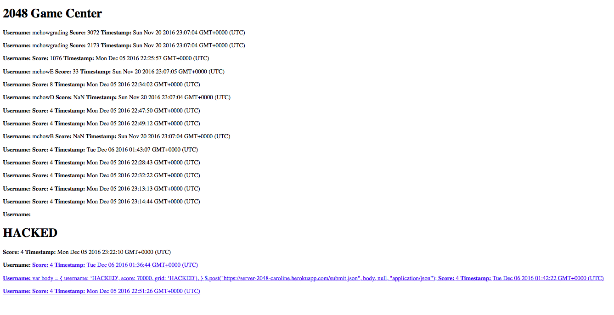
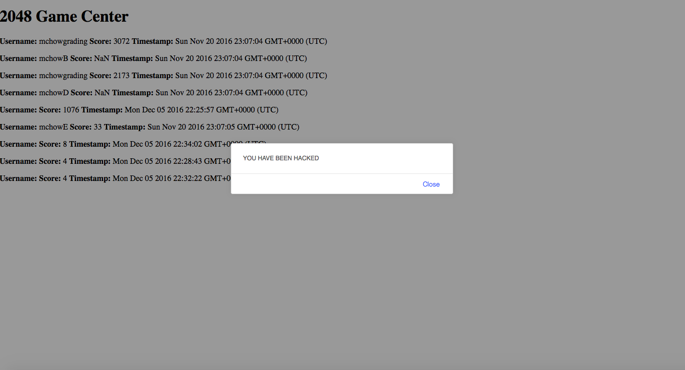

Comp 20 - Assignment 4: Security
Maya DeBellis
Introduction
The goal of this assignment was to find security flaws and vulnerabilities in my partners code.
Methodology
To test security flaws, I used the web interface of the game modified in the previous assignment.
I also looked at the server code my partner had written to find vulnerabilites. In order to see how
my attacks effected the server and database they set up, I looked at the GET request url routes.
Abstract of Findings
I discovered that my partner's code had several security vulnerabilities. One of which
was that I could access information in the database that theoretically should have been kept
private. Other issues that I found was that the program didnt check for validity of types of input,
and I was able to inject non plain-text infomation such as html and javascript to change the validity of the data
and what happened when you went to the server url.
Issues found
- Able to access all information in database
- When you go to the server's '/scores.json' page you are meant to enter
in the query string one username to get data back about. Instead
you can end up acessing data that was unintended for this page.
By using mongo injections like [$gt] or [$ne] you
can see lots of infomation in the database and can then alter infomation from here.
- Severity: This is a high severity issue becuase you can alter information in the
database. In this case there is no sensitive infomation stored there,
but if infomation like a password was stored with each username, this would be
even more of a high severity issue.
- Image:

- Able to send invalid input
- Where the user is asked to input a username once the game is over, the
user can input anything they want. The program does not check whether
a username is a valid string. This means that you can enter all sorts
of types of data in this field such as html, links, and images. The photo
below shows a html header injection and a link injection.
- Severity: This issue is of low severity. If the data is not of the correct type,
it will not affect any of the other data in the database.
- Image:

- Vulnerable to cross site scripting
- In the same place where the program asks for user input, cross site
scripting attacks can occur if measures aren't taking to prevent against
them. There is no code in the server that prevents against this javascript
from entering the database as valid data. This can lead to large crashes
and the program not working. For my cross site scripting attack,
I added a popup that appears when you load the page.
- Severity: High severity! Hackers can send any sort of information to crash or change
a website through cross site scripting.
- Image:

Conculsions
Make sure that your database is secure and you are always thinking about security risks!
MongoDB is fairly easy to hack into, but that doesn't necessarily mean that SQL based databases are
inherently more secure. Always be thinking about security vulnerabilities when creating any kind of
software!